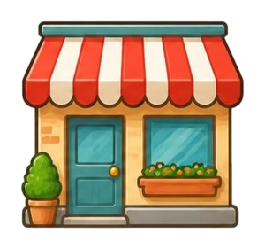
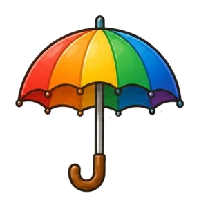

🔐 2번 방 · 물건을 자세히 탐구하기7차시 / 5~9도입

물건 교과서 · 방 탈출 미션
2번 방 · 7차시
재료가 다르면
달라질까?
종이, 천, 비닐, 포일… 무엇이 다를까?
지난 미션 돌아보기
6차시 비밀 문장, 기억나요?
물건의 특별한 생김새에는
저마다 하는 일이 있어요.
저마다 하는 일이 있어요.
🕵️ 숙제 확인! 종이·천·플라스틱 물건을 찾아왔나요?
재료끼리 모아서 책상 위에 놓아 봐요.
재료끼리 모아서 책상 위에 놓아 봐요.

🚨 싹쓸이 마법사의 신기한 물건 가게!

MISSION BRIEFING
오늘의 미션 네 가지
미션 1
재료 실험실
예상하고 실험해요
미션 2

신기한 물건 가게
이 재료로 만들면 어떨까?
미션 3

꼬마 우산 실험
비를 막는 재료는?
미션 4
재료 탐정 보고서
알게 된 것 정리
보상
열쇠 조각 3
2번 방 세 번째!
🎯 학습 목표 여러 재료의 특징을 비교하고, 재료마다 좋은 점과 아쉬운 점을 생각하며 쓰임새에 맞는 재료를 고를 수 있어요.
MISSION 2
🏪 신기한 물건 가게
1
마법사가 재료를 바꾼 물건을 팔아요.
2
이 재료라서 😀 좋은 점은 무엇일까요?
3
이 재료라서 😟 걱정되는 점은 무엇일까요?
4
💡 어떻게 하면 이 재료로도 쓸 수 있을까요? 생각은 여러 가지예요!
MISSION 3
☂️ 꼬마 우산 실험
1
휴지 인형이 비를 맞지 않게 꼬마 우산을 만들어요.
2
재료 한 가지를 골라 나무젓가락에 고무줄로 묶어요. (5분)
3
분무기 비를 5번 뿌려요. 휴지 인형은 ☀️ 보송보송? 💧 축축?
4
왜 그 재료가 비를 잘 막았는지 말해요.
MISSION 4 · 활동 시간
재료 탐정 보고서를 써요!
NEXT MISSION
8차시 예고
종이의
종이의
놀라운 힘
얇은 종이로 책을 들어 올릴 수 있을까?
🕵️ 튼튼한 종이 물건을 찾아오세요!